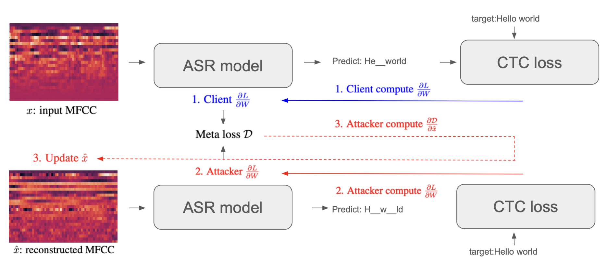
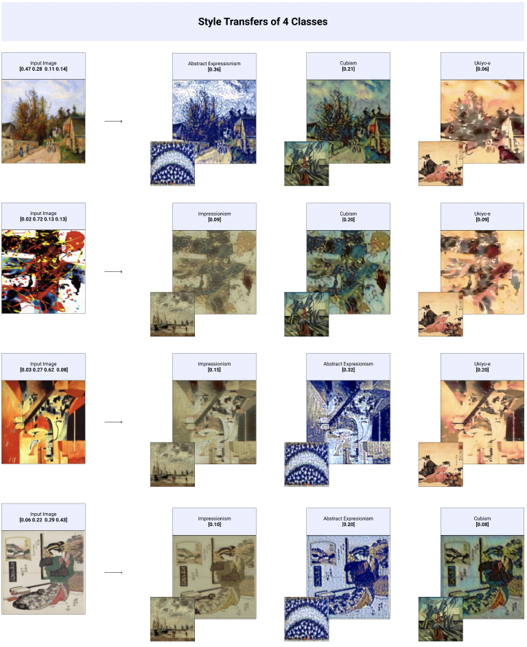
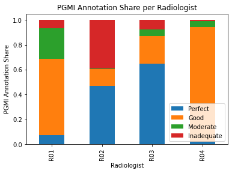
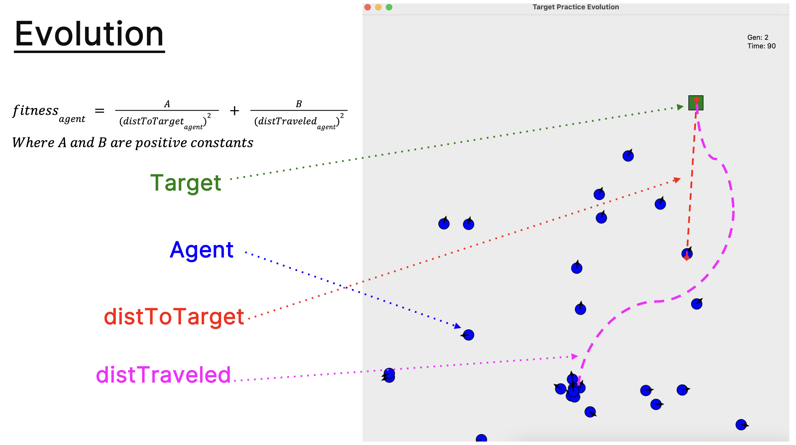
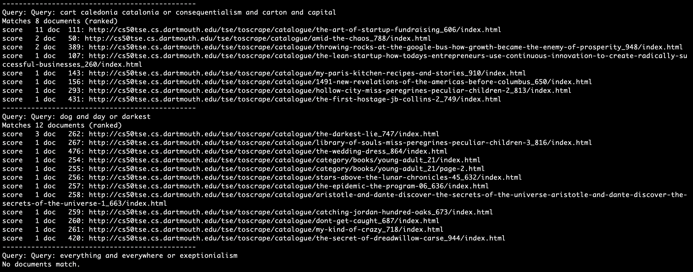

Projects
Here is a collection of projects I have worked on.
"Reconstructing Speech Features of Automatic Speech Recognition Systems in Federated Learning by Gradient Descent"

Co-authored paper, "Reconstructing Speech Samples of Automatic Speech Recognition Systems in Federated Learning by Gradient Descent" (ACCEPTED, Complex Networks and Their Applications 2024).
- Developed PyTorch codebase to implement federated learning on LibriSpeech corpus. Wrote core gradients matching algorithm to reconstruct spectrograms with a first-order optimization
- Published findings in peer-reviewed conference paper, Complex Networks and Their Applications 2024
- Built and optimized deep learning models for speech recognition using modern speech recognition models e.g. DeepSpeech1. Experimented with loss functions and regularization techniques to improve reconstruction quality
Generative Agents: Interactive Simulacra of Human Behavior
A full replication of the Park et al. (2023) generative agents paper using Anthropic Claude. 25 agents inhabit a sandbox town with homes, a cafe, a park, shops, and a town hall.
- Implemented complete agent architecture: memory stream with recency/importance/relevance retrieval, reflection engine, recursive daily planning, and perceive-retrieve-react cycle
- Built simulation engine with 10-minute timesteps, spatial world management, and WebSocket broadcast for real-time observation
- Multi-turn dialogue system enabling emergent conversations between agents
Biographical RAG System
A Retrieval Augmented Generation system for intelligent conversations about historical figures using their actual writings and biographical content.
- Built smart content scraping pipeline for Wikisource, Project Gutenberg, speeches, letters, and historical essays
- Implemented semantic search with ChromaDB vector storage and persistent embeddings
- GPT-4 powered Q&A with source citations and factual grounding from retrieved content
Adversarially Robust Style Transfer

Developed an innovative approach to style transfer, exploring adversarially robust style classifiers and emergent properties of robust models for artistic applications. Also experimented with splicing layers of CNNs for Neural Style Transfer method.
- Implemented adversarially robust neural networks in PyTorch
- Built base-classifier using pre-trained VGG, SqueezeNet, and ResNet CNNs to classify style of images. Then used Torchattacks to generate adversarial examples
- Wrote custom PyTorch dataloaders to load images from Kaggle dataset
Git Docs
A hosted, single-page todo and notes app with git-inspired revision controls — sync, commit, and branch your notes like code.
- Built with Next.js App Router and React 19
- Supabase backend for persistent storage with snapshot-based version history
- Git-style workflow: sync saves working state, commit creates snapshots with messages, branch creates named version streams
Medical Image Quality Assessment

Developed deep learning models to automatically assess the quality of mammogram images, aiming to improve medical imaging workflows and diagnostic reliability.
- Implemented U-Net architecture for image segmentation
- Built and trained medical imaging models
- Conducted data exploration on radiologist annotations of mammogram quality. Used Pandas and Seaborn for data analysis
WhisperChain
A secure, role-based messaging platform with anonymous communication, moderation tools, and message flagging. Team project.
- Implemented client-server architecture with role-based access controls (admin, moderator, user)
- Built server-side authentication, message routing, and security/moderation policy enforcement
- Designed standardized message protocol for reliable client-server communication
DALI Data Challenge 2025

Computer vision challenge to count barnacles in images. Experimented with traditional CV techniques (chunking, thresholding, binarization, contour detection) and Meta's Segment Anything Model (SAM).
- Implemented multiple evaluation metrics: naive count comparison, IoU, Dice coefficient, and accuracy
- Explored SAM automatic mask detection with tuned hyperparameters for biological image segmentation
- Proposed hybrid approach combining traditional CV filtering with SAM prompting for improved precision
Evolution Simulator
Created a visual simulation of evolutionary algorithms where agents learn to hit moving targets, implementing the NEAT (NeuroEvolution of Augmenting Topologies) algorithm.
- Built interactive visualization system using PyGame
- Implemented NEAT evolutionary algorithm from scratch
Tiny Search Engine

Implemented a search engine based on early Google algorithms, capable of crawling HTML pages, indexing and ranking results. Modelled after early PageRank algorithm.
- Built efficient indexing and ranking systems
- Implemented PageRank-based result ranking
- Used valgrind/GDB for debugging